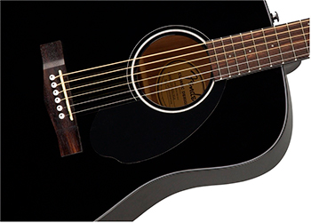
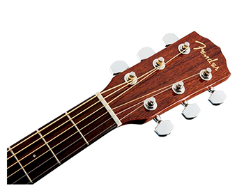

Элегантная аккустическая гитара в корпусе дредноут с декой из массива Ели. Для создания этого инструмента были использованы материалы ит комплектующие отличного качества, при этом цена гитары весьма демократичная. Это бюджетная модель, которая подойдет начинающим музыкантам, для самостоятельных занятий и выступлений, для игры в различных стилях музыки. Удобная форма деки обеспечивает комфорт при игре и позволяет не уставать даже при продолжительных занятиях.
FENDER CD-60S — идеальный инструмент для музыкантов, которые хотят приобрести инструмент высокого качества, обладающий прекрасным звуком и удобный при игре, при этом достаточно бюджетный. Корпус модели классической формы дредноут элегантно выглядит и обеспечивает комфорт при игре. Материал и конструкция гитары позволяют использовать её для самостоятельных занятий и репетиций, камерных выступлений для небольшого круга слушателей: дома, на открытом воздухе или в кафе.

Верхняя дека CD-60S — из цельной древесины ели, это придаёт инструменту прекрасные акустические характеристики при любом стиле игры, яркое звучание и широкий динамический диапазон. Нижняя дека и обечайка сделаны из красного дерева, что позволило не только получить эффектный внешний вид, но и добиться сбалансированного звучания и впечатляющей громкости. Гриф профиля Fender® ’Easy-to-Play’ также выполнен из красного дерева, с однослойной черной окантовкой. Удобная форма грифа придётся по душе как начинающим гитаристам, так и опытным профессиональным музыкантам. Элегантный облик гитары подчеркивает контрастный черный пикгард и блестящая хромированная фурнитура.
Форма корпуса дредноут
Верхняя дека массив ели с зубчатым «X»-креплением
Задняя дека и обечайка красное дерево (Mahogany)
Профиль грифа ‘Easy-to-Play’ с закругленными краями

Ель является стандартным современным материалом для изготовления акустических гитар и других акустических инструментов, добавляя прочности, яркости и динамического диапазона, реагируя на любые стили игры, от жесткой, до деликатного перебора.
С закругленными краями грифа, этот инструмент создает невероятно удобные ощущения ладов, что идеально как для начинающих игроков, так и для опытных профи.
Наряду с ошеломляющей вибрацией, резонансное сочетание красного дерева сзади и по бокам обеспечивает сбалансированный тон с большим количеством объема и средних частот.
©Все права защищены